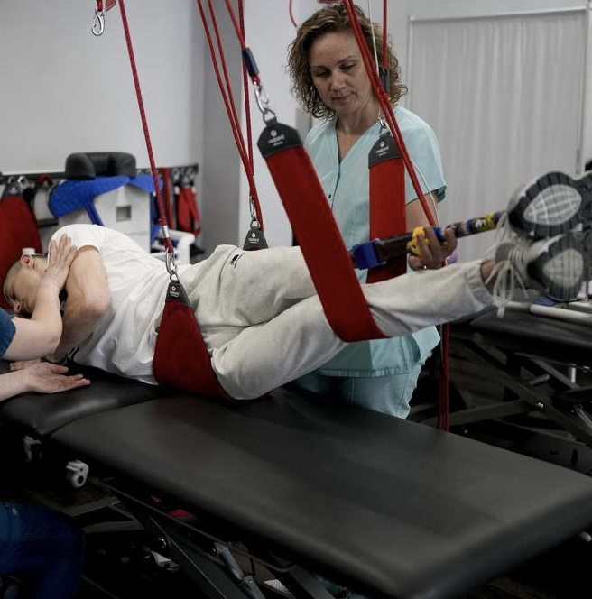
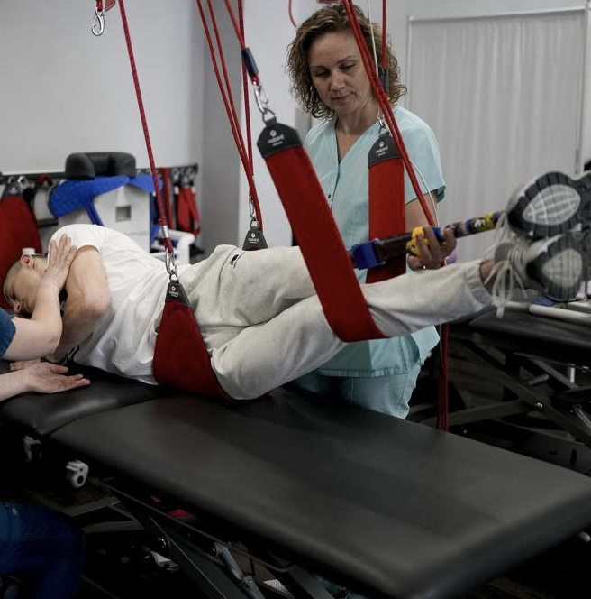

137 brigade de renseignement


 



Fondation caritative du service de patronage du régiment d'Azov. La Fondation aide les défenseurs blessés avec des traitements, des prothèses, de la paperasse. La fondation aide également les familles des soldats tombés au combat en organisant des funérailles et en fournissant une assistance psychologique.


Si vous voulez savoir où sont les bons Russes, alors ils sont ici. Ayant la citoyenneté d'un pays terroriste, les gars défendent l'Ukraine en tant que volontaires. Pendant longtemps, ils n'ont pas été officiellement enregistrés et n'ont reçu ni sécurité ni assistance. Maintenant, le processus d'inscription a été lancé, mais il est long et compliqué, donc les gars n'ont toujours pas de salaire. Chacun de ces guerriers a fait un choix difficile, prenant le parti de la vérité et de la justice, sacrifiant sa maison et la possibilité d'y retourner. Chacun d'eux a fait le choix de se battre pour une Ukraine libre, au péril de sa santé et de sa vie chaque jour.
Les renseignements militaires de la brigade 137 sont obligés d'être autosuffisants et de s'équiper. Ils sont incapables d'aider leurs femmes et leurs enfants, qui attendent avec impatience leur retour et la fin de la guerre. Beaucoup de gars viennent de la ville de Nikolaev, qui est régulièrement soumise à de violents bombardements. Leurs proches sont contraints de quitter leur domicile et deviennent déplacés, ou se trouvent dans une zone à haut risque.
IBAN: UA42 3808 0500 0000 0026 0037 8567 6
Rècepteur: Mironov Mikolay
Adresse du destinataire: city Mykolaiv, Krugova street, 26
Swift-code: FUIBUA2XXXX